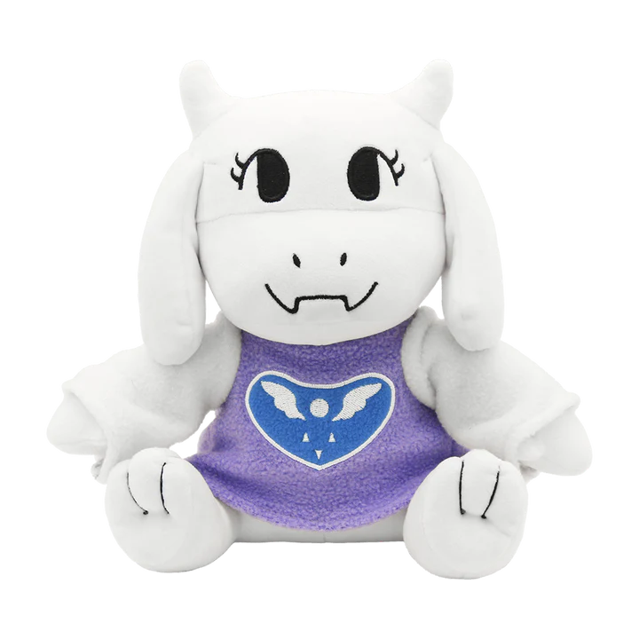
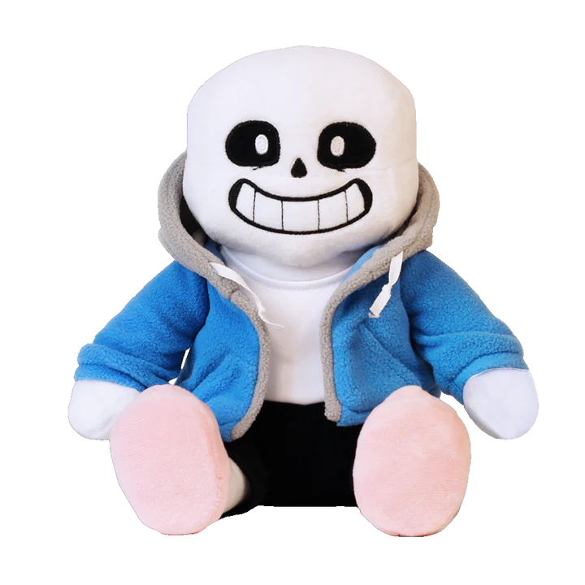
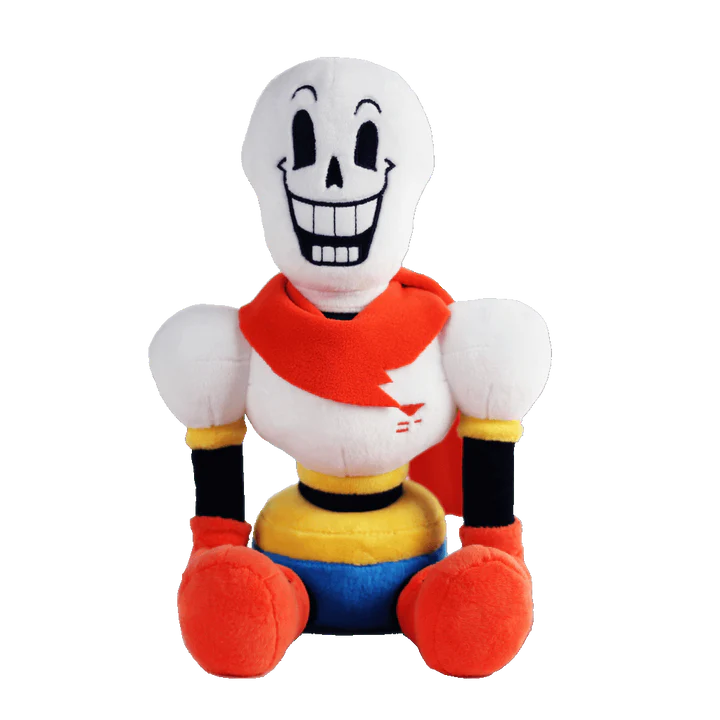
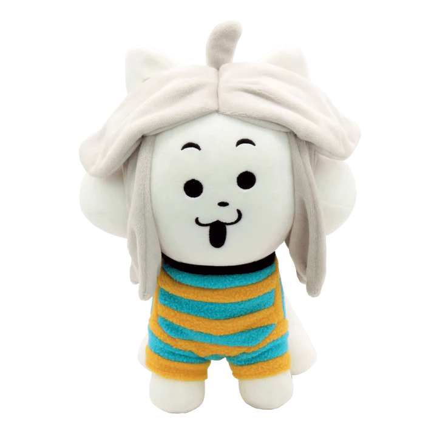

Gathered indie stuffs, for indie people. :)
|  | Toriel Plush ($ 36) * The Toriel plush, prototyped by Fangamer's own Saber Murphy, is 10 inches tall and features an embroidered face and Delta Rune. Ref: Fangamer |
|---|---|
|  | Sans Plush ($ 36) * This sans plush is 10 inches tall (seated) and comes with a couple of extra eyes, for some reason. Collaboratively designed by Saber Murphy and Toby Fox. Ref: Fangamer |
|  | Papyrus Plush ($ 36) * This official Papyrus plush is 12 inches tall (seated). Collaboratively designed by Saber Murphy and Toby Fox. Ref: Fangamer |
|  | Temmie Plush ($ 36) * This full-sized Temmie plush is about 10 inches tall and comes with a colleg diploma. Our new production run doesn't include a box, but we've added a Shop Tem sticker so your Tem can set up shop in any cardboard box you have handy. It was designed by HollyIvyDesigns, Temmie Chang, Betty Kwong, and Saber Murphy. Ref: Fangamer |